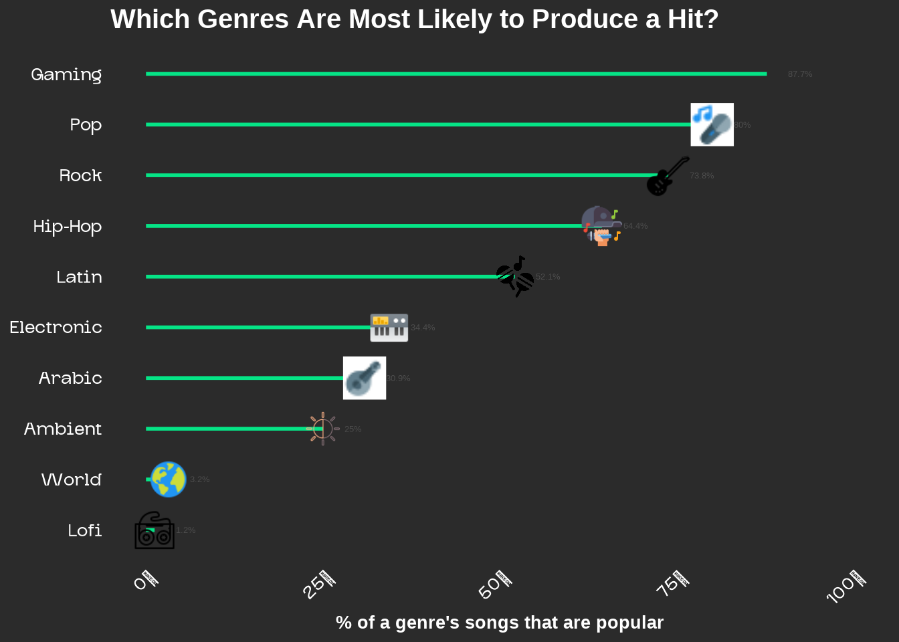
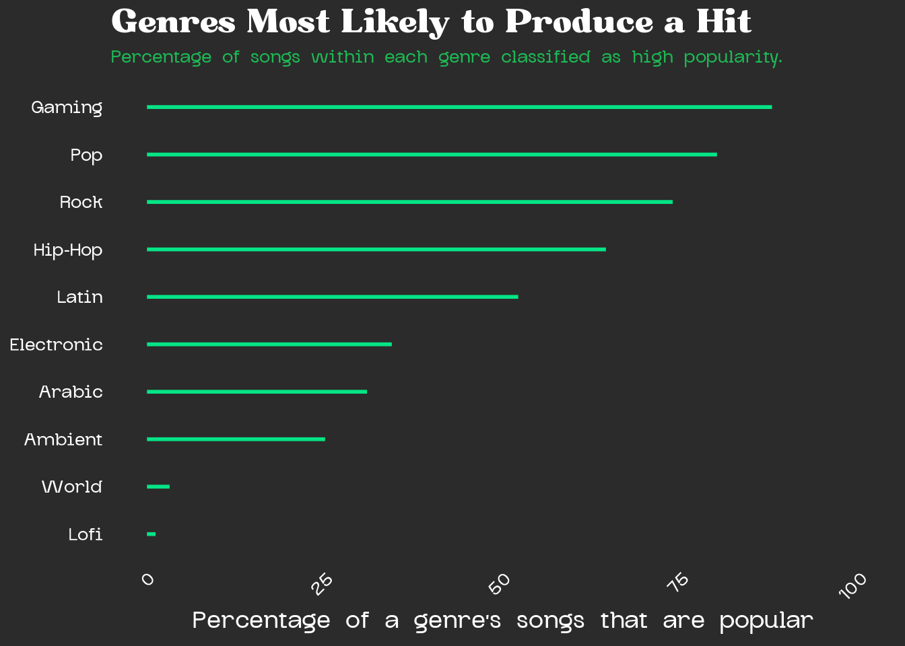
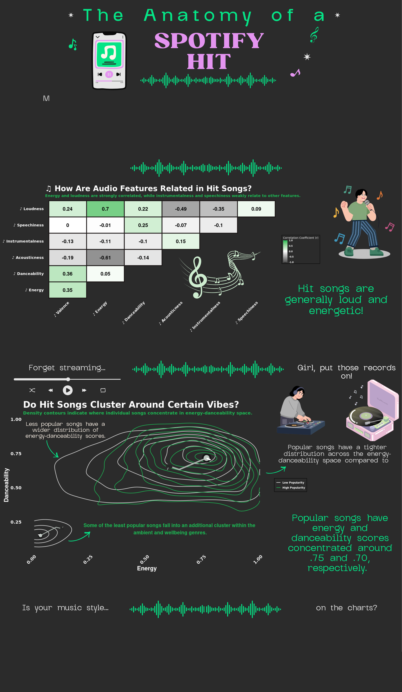

library(tidyverse)
library(ggthemes)Drafting Visualizations: The Anatomy of a Spotify Hit
The purpose of this document is to finalize visuals for this infographic based on the Spotify hits dataset obtained from Kaggle and organized by Solomon Ameh.
Import & Wrangle Data
Here, the necessary packages are loaded, and the Spotify dataset is read from the local directory.
# Import most popular songs
high_popular <- read.csv(
here::here("data", "high_popularity_spotify_data.csv"))
low_popular <- read.csv(
here::here("data", "low_popularity_spotify_data.csv"))The dataset is filtered to retain only variables relevant to answer each question, ensuring a focused and efficient visualization workflow. Additionally, popularity groups were assigned based on each original popularity dataset prior to merging and creating spotify_clean.
spotify_clean <- bind_rows(low_popular, high_popular)
# Select variables relevant to the analysis
spotify_clean <- spotify_clean %>%
select(track_id, track_name,
playlist_genre, acousticness,
track_popularity,
valence, energy, danceability, mode, loudness, tempo, speechiness, instrumentalness, liveness) %>%
distinct() %>%
drop_na() %>%
mutate(popularity_group = factor(
ifelse(track_popularity > 68, "high", "low"),
levels = c("low", "high")
))
# # Filtered dataset for charts (excludes problematic genres)
# spotify_clean_filtered <- spotify_clean %>%
# # filter(!playlist_genre %in% c("gaming", "r&b", "punk")) %>%
# group_by(playlist_genre) %>%
# filter(n() >= 100) %>%
# ungroup()
set.seed(123)
n <- nrow(high_popular) # 1686
low_sample <- low_popular %>% slice_sample(n = n)
spotify_clean <- bind_rows(
high_popular %>% mutate(popularity_group = "high"),
low_sample %>% mutate(popularity_group = "low")
) %>%
select(track_id, track_name,
playlist_genre, acousticness,
track_popularity,
valence, energy, danceability, mode, loudness, tempo, speechiness, instrumentalness, liveness) %>%
distinct() %>%
drop_na() %>%
# mutate(popularity_group = factor(popularity_group,
# levels = c("low", "high")))
mutate(popularity_group = factor(
ifelse(track_popularity > 68, "high", "low"),
levels = c("low", "high")
))
# Verify balance
table(spotify_clean$popularity_group)
low high
1776 1467 Pre-planning: Restating infographic objectives
1. Restate the questions you hope to answer with your inforgraphic. This should include one overarching question (think of this as driving the overall theme of your infographic) and at least three subquestions (each of which will be addressed by your infographic’s component visualizations). Have these questions changed at all since FPM #1? If yes, how so?
This infographic aims to explore the audio and genre characteristics that distinguish high popularity songs from low popularity songs on Spotify. Essentially, the goal is to identify patterns that explictly define a “hit”. The overarching question in mind is: What makes a song a Spotify hit? This will be addressed with three subquestions:
Are hits emotionally different from non-hits?
Do hit songs have a signature sound based on certain energy-danceability combinations?
Which genres are most likely to produce a hit?
Popularity Cutoff Justification
spotify_clean %>%
ggplot(aes(x = track_popularity,
fill = popularity_group)) +
geom_histogram(binwidth = 2, color = "white", linewidth = 0.1) +
geom_vline(xintercept = 68, color = "white",
linewidth = 1, linetype = "dashed") +
scale_fill_manual(values = c("low" = "#535353",
"high" = "#1DB954"),
labels = c("Low Popularity",
"High Popularity")) +
labs(title = "Distribution of Track Popularity Scores",
subtitle = "A score of 68 (~75th percentile) separates high and low popularity songs.",
x = "Track Popularity", y = "Count", fill = NULL) +
theme_minimal()
Recreating hand drawn visualizations
The following visualizations were created to observe trends in several components that may contribute to the popularity of Spotify hits such as: emotional enjoyment, certain combinations of energetic and danceability of tracks, and popular genres.
How do audio features relate in hits?
# spotify_clean %>%
# group_by(popularity_group) %>%
# summarise(across(c(valence, acousticness, loudness, energy), mean)) %>%
# pivot_longer(-popularity_group, names_to = "feature", values_to = "mean") %>%
# group_by(feature) %>%
# mutate(scaled = scale(mean)) %>% # normalize to same scale
# filter(popularity_group == "high")# Create a summary table for distribution of valence score
# based on popularity
# valence_dist <- spotify_clean %>%
# select(popularity_group, valence) %>%
# distinct()# Add canva font
library(showtext)
# Load your fonts — point to the actual .ttf/.otf files on your computer
font_add("Bugaki", "~/MEDS/eds-240/eds240-infographic/fonts/Bugaki.ttf") # title font
font_add("Glock Grotesk", "~/MEDS/eds-240/eds240-infographic/fonts/GlockGrotesque-Medium.ttf") # your body font
showtext_auto() # tell ggplot to use text families
# Variable labels with music notes
music_labels <- c(
valence = "Valence",
energy = "Energy",
danceability = "Danceability",
acousticness = "Acousticness",
instrumentalness = "Instrumentalness",
speechiness = "Speechiness",
loudness = "Loudness"
)
var_order <- c("valence", "energy", "danceability",
"acousticness", "instrumentalness",
"speechiness", "loudness")
spotify_clean %>%
filter(popularity_group == "high") %>%
select(all_of(var_order)) %>%
cor() %>%
round(2) %>%
as.data.frame() %>%
rownames_to_column("var1") %>%
pivot_longer(-var1, names_to = "var2", values_to = "corr") %>%
mutate(
var1 = factor(var1, levels = var_order),
var2 = factor(var2, levels = var_order)
) %>%
filter(as.numeric(var1) > as.numeric(var2)) %>%
ggplot(aes(x = var2, y = var1, fill = corr)) +
geom_tile(color = "#191414", linewidth = 1.5) +
geom_text(aes(label = corr), size = 7,
color = "black", fontface = "bold") +
scale_fill_gradient2(
low = "#535353", mid = "white", high = "#1DB954",
midpoint = 0, limits = c(-1, 1)
) +
scale_x_discrete(labels = music_labels) +
scale_y_discrete(labels = music_labels) +
labs(
title = "How Audio Features Are Related in Hit Songs",
subtitle = "Energy and loudness are strongly correlated, while instrumentalness and speechiness \nweakly relate to other features.",
x = NULL, y = NULL, fill = "Correlation Coefficient (r)"
#caption = "Data courtesy of Solomon Ameh on Kaggle. )Audio features sourced from Spotify's Web API."
) +
theme_minimal() +
theme(
plot.background = element_rect(fill = "#2b2b2b", color = NA),
# plot.caption = element_text(size = 10, color = "white"),
panel.background = element_rect(fill = "#2b2b2b", color = NA),
plot.title = element_text(size = 35, color = "white", face = "bold", family = "Bugaki"),
plot.subtitle = element_text(color = "#1DB954", size = 15, face = "bold", family = "Glock Grotesk"),
axis.text.x = element_text(angle = 45, hjust = 1,
color = "white", size = 17, face = "bold", family = "Glock Grotesk"),
axis.text.y = element_text(color = "white", size = 17, face = "bold", family = "Glock Grotesk"),
legend.background = element_rect(fill = "#2b2b2b"),
legend.text = element_text(color = "white", face = "bold", family = "Glock Grotesk"),
legend.title = element_text(color = "white", family = "Glock Grotesk"),
panel.grid = element_blank()
) 
#ggsave("correlation_matrix.png", width = 16, height = 12, dpi = 300)Do hit songs have a signature sound based on energy and loudness scoring (is there a certain “vibe”)?
# Create subset for variables of interest
energy_dance_df <- spotify_clean %>%
select(energy, danceability, popularity_group)
energy_dance_df %>%
ggplot(aes(x = energy, y = danceability, color = popularity_group)) +
geom_density_2d(linewidth = 0.8, bins = 10) +
scale_color_manual(
values = c("low" = "#e6e6e6", "high" = "#1DB954"),
labels = c("low" = "Low Popularity", "high" = "High Popularity")
) +
labs(
title = "Hit Songs Share a Certain Vibe",
subtitle = "Density contours indicate where individual songs concentrate in energy-danceability space.",
x = "Energy", y = "Danceability", color = NULL
) +
theme_minimal() +
theme(
plot.background = element_rect(fill = "#2b2b2b", color = NA),
panel.background = element_rect(fill = "#2b2b2b", color = NA),
plot.title = element_text(size = 40, color = "white", face = "bold", family = "Bugaki"),
plot.subtitle = element_text(size = 15, color = "#1DB954", face = "bold", family = "Glock Grotesk"),
axis.title.x = element_text(size = 20, color = "white", face = "bold", family = "Glock Grotesk"),
axis.title.y = element_text(size = 20, color = "white", face = "bold", family = "Glock Grotesk"),
axis.text.x = element_text(size = 15, color = "white", face = "bold", family = "Glock Grotesk", angle = 45, hjust = 1),
axis.text.y = element_text(size = 15, color = "white", face = "bold", family = "Glock Grotesk"),
legend.background = element_rect(fill = "#2b2b2b"),
legend.text = element_text(color = "white", face = "bold", family = "Glock Grotesk"),
legend.title = element_text(color = "white", family = "Glock Grotesk"),
panel.grid = element_blank()
)
Which genres are most likely to produce a hit?
# library(kableExtra)
#
# genre_splits <- bind_rows(
# low_popular %>% mutate(popularity_group = "low"),
# high_popular %>% mutate(popularity_group = "high")
# ) %>%
# count(playlist_genre, popularity_group) %>%
# pivot_wider(names_from = popularity_group,
# values_from = n,
# values_fill = 0) %>%
# mutate(
# total = low + high,
# pct_high = round(high / total * 100, 1),
# excluded = ifelse(playlist_genre %in% c("gaming", "r&b", "punk"),
# "Yes", "No")
# ) %>%
# arrange(desc(total))
#
# genre_splits %>%
# kable(col.names = c("Genre", "Low", "High", "Total", "% High", "Excluded"),
# caption = "Genre splits in raw data. Genres with severe high/low
# imbalance or insufficient observations were excluded from analysis.",
# align = c("l", "r", "r", "r", "r", "c")) %>%
# kable_styling(bootstrap_options = c("striped", "hover", "condensed"),
# full_width = FALSE) %>%
# row_spec(which(genre_splits$excluded == "Yes"),
# background = "#ffe6e6") %>% # red for excluded
# row_spec(which(genre_splits$total < 100 & genre_splits$excluded == "No"),
# background = "#fff3cd") # yellow for low count warninglibrary(ggimage)
# Create filtered dataset first - exclude problematic genres
# spotify_clean_filtered <- spotify_clean %>%
# filter(!playlist_genre %in% c("gaming", "r&b", "punk")) %>%
# group_by(playlist_genre) %>%
# filter(n() >= 100) %>%
# ungroup()
# Calculate % from FILTERED dataset
genre_pct <- spotify_clean %>%
count(playlist_genre, popularity_group) %>%
group_by(playlist_genre) %>%
mutate(pct = n / sum(n) * 100) %>%
ungroup() %>%
filter(popularity_group == "high")
# Top 9 by count from FILTERED dataset (no need to slice_max since gaming already removed)
top_genres <- spotify_clean %>%
count(playlist_genre) %>%
slice_max(n, n = 10) %>%
pull(playlist_genre)
# Filter genre_pct to top 9
genre_pct <- genre_pct %>%
filter(playlist_genre %in% top_genres)
# Add icon column (removed brazilian, added nothing since we have 9)
genre_pct <- genre_pct %>%
mutate(icon_path = case_when(
playlist_genre == "pop" ~ "~/MEDS/eds-240/eds240-infographic/icons/icons8-pop-music-24.png",
playlist_genre == "rock" ~ "~/MEDS/eds-240/eds240-infographic/icons/icons8-rock-music-50.png",
playlist_genre == "hip-hop" ~ "~/MEDS/eds-240/eds240-infographic/icons/icons8-hip-hop-64.png",
playlist_genre == "latin" ~ "~/MEDS/eds-240/eds240-infographic/icons/latin.png",
playlist_genre == "electronic" ~ "~/MEDS/eds-240/eds240-infographic/icons/icons8-electronic-music-48.png",
playlist_genre == "arabic" ~ "~/MEDS/eds-240/eds240-infographic/icons/icons8-lute-24.png",
playlist_genre == "ambient" ~ "~/MEDS/eds-240/eds240-infographic/icons/icons8-contrast-64.png",
playlist_genre == "world" ~ "~/MEDS/eds-240/eds240-infographic/icons/icons8-world-48.png",
playlist_genre == "lofi" ~ "~/MEDS/eds-240/eds240-infographic/icons/icons8-cassette-50.png"
))
# Create lollipop chart
genre_pct %>% mutate(playlist_genre = str_to_title(playlist_genre)) %>%
ggplot(aes(x = pct, y = reorder(playlist_genre, pct))) +
geom_segment(aes(x = 0,
xend = pct,
yend = playlist_genre),
color = "#05e486",
linewidth = 1) +
geom_image(aes(image = icon_path), size = 0.05, asp = 10/6) +
geom_text(aes(label = paste0(round(pct, 1), "%"), x = pct + 3),
hjust = 0, size = 3.5, color = "grey30") +
# geom_vline(xintercept = 50, linetype = "dashed",
# color = "darkred", linewidth = 0.5) +
scale_x_continuous(labels = scales::percent_format(scale = 1),
limits = c(0, 100)) +
labs(
title = "Which Genres Are Most Likely to Produce a Hit?",
# subtitle = "A pop or rock song is most likely to be a hit in their respective genre based on track popularity scoring.",
x = "% of a genre's songs that are popular",
y = NULL
) +
theme_minimal() +
theme(
plot.background = element_rect(fill = "#2b2b2b", color = NA),
# plot.caption = element_text(size = 10, color = "white"),
panel.background = element_rect(fill = "#2b2b2b", color = NA),
plot.title = element_text(size = 30, color = "white", face = "bold", family = "Utopia"),
plot.subtitle = element_text(color = "#1DB954", size = 15, face = "bold", family = "Glock Grotesk"),
axis.text.x = element_text(angle = 45, hjust = 1,
color = "white", size = 15, face = "bold", family = "Glock Grotesk"),
axis.text.y = element_text(color = "white", size = 15, face = "bold", family = "Glock Grotesk"),
legend.background = element_rect(fill = "#2b2b2b"),
legend.text = element_text(color = "white", face = "bold", family = "Glock Grotesk"),
legend.title = element_text(color = "white", family = "Glock Grotesk"),
panel.grid = element_blank(),
axis.title.x = element_text(color = "white", size = 20, face = "bold"),
axis.title.y = element_text(color = "white", size = 20, face = "bold")
) 
# # For now, only observe differences for most popular genres
# # Lowest popularity comparison possible for later analyses
# ###________________________________________________________
#
# # Use ggimage for icons
# library(ggimage)
#
# # Create subset to calculate % of highly popular songs within each genre
# genre_pct <- spotify_clean %>%
# # Count # of songs in each genre by pop group
# count(playlist_genre, popularity_group) %>%
# # Group by genre
# group_by(playlist_genre) %>%
# # Calculate % of songs in each popularity group within genre
# mutate(pct = n / sum(n) * 100) %>%
# ungroup() %>%
# # Keep only high popularity group
# filter(popularity_group == "high")
#
# # Filter to top 10 genres
# top_genres <- spotify_clean %>%
# count(playlist_genre) %>%
# # Cut top 10 in count "n"
# slice_max(n, n = 10) %>%
# # Pull genre column only and return as vector
# pull(playlist_genre)
#
# # Identify shared genres in top 10
# genre_pct <- genre_pct %>%
# filter(playlist_genre %in% top_genres)
#
# # Add icon column
# genre_pct <- genre_pct %>%
# mutate(icon_path = case_when(
# playlist_genre == "pop" ~ "~/MEDS/eds-240/eds240-infographic/icons/icons8-pop-music-24.png",
# playlist_genre == "rock" ~ "~/MEDS/eds-240/eds240-infographic/icons/icons8-rock-music-50.png",
# playlist_genre == "hip-hop" ~ "~/MEDS/eds-240/eds240-infographic/icons/icons8-hip-hop-64.png",
# playlist_genre == "latin" ~ "~/MEDS/eds-240/eds240-infographic/icons/latin.png",
# playlist_genre == "electronic"~ "~/MEDS/eds-240/eds240-infographic/icons/icons8-electronic-music-48.png",
# playlist_genre == "arabic" ~ "~/MEDS/eds-240/eds240-infographic/icons/icons8-lute-24.png",
# playlist_genre == "ambient" ~ "~/MEDS/eds-240/eds240-infographic/icons/icons8-contrast-64.png",
# playlist_genre == "brazilian" ~ "~/MEDS/eds-240/eds240-infographic/icons/icons8-dancing-64.png",
# playlist_genre == "world" ~ "~/MEDS/eds-240/eds240-infographic/icons/icons8-world-48.png",
# playlist_genre == "lofi" ~ "~/MEDS/eds-240/eds240-infographic/icons/icons8-cassette-50.png"
# ))
#
# spotify_clean_filtered <- spotify_clean %>%
# # filter(!playlist_genre %in% c("gaming", "r&b", "punk")) %>%
# group_by(playlist_genre) %>%
# filter(n() >= 100) %>%
# ungroup()
#
# # Verify
# spotify_clean_filtered %>%
# group_by(playlist_genre) %>%
# summarise(n = n()) %>%
# arrange(desc(n))
# # Create lollipop chart with associated icons
# genre_pct %>%
# # Order in descending order based on pct
# ggplot(aes(x = pct, y = reorder(playlist_genre, pct))) +
# # Draw line segment from 0 to pct of each genre
# geom_segment(aes(x = 0,
# xend = pct,
# yend = playlist_genre),
# color = "grey70",
# linewidth = 0.5) +
# # Call icons as an image from file path
# geom_image(aes(image = icon_path), size = 0.05, asp = 10/6) +
# # Add pct as % amount adjusted to 3 units to right of icon
# # Round pct to nearest hundreth
# geom_text(aes(label = paste0(round(pct, 1), "%"), x = pct + 3),
# hjust = 0, size = 3.5, color = "grey30") +
# # Add threshold line
# geom_vline(xintercept = 50, linetype = "dashed",
# color = "darkred", linewidth = 0.5) +
# # Add % sign to each x label
# scale_x_continuous(labels = scales::percent_format(scale = 1),
# limits = c(0, 100)) +
# labs(
# title = "Which Genres Are Most Likely to Produce a Hit?",
# subtitle = "A pop song is most likely to produce a hit based on track popularity scoring.",
# x = "% of a genre's songs that are popular",
# y = NULL # No y axis label
# ) +
# theme_minimal() +
# # Adjust axis elements (size, remove y grid)
# theme(
# plot.title = element_text(size = 14),
# plot.subtitle = element_text(color = "grey50", size = 11),
# panel.grid.major.y = element_blank()
# )
genre_pct %>%
mutate(playlist_genre = str_to_title(playlist_genre)) %>%
ggplot(aes(x = pct, y = reorder(playlist_genre, pct))) +
geom_segment(
aes(x = 0, xend = pct, yend = playlist_genre),
color = "#05e486", linewidth = 1
) +
scale_x_continuous(
limits = c(0, 100)
) +
labs(
title = "Genres Most Likely to Produce a Hit",
subtitle = "Percentage of songs within each genre classified as high popularity.",
x = "Percentage of a genre's songs that are popular",
y = NULL
) +
theme_minimal() +
theme(
plot.background = element_rect(fill = "#2b2b2b", color = NA),
panel.background = element_rect(fill = "#2b2b2b", color = NA),
plot.title = element_text(size = 35, color = "white", face = "bold", family = "Bugaki"),
plot.subtitle = element_text(size = 15, color = "#1DB954", face = "bold", family = "Glock Grotesk"),
axis.title.x = element_text(size = 20, color = "white", face = "bold", family = "Glock Grotesk"),
axis.title.y = element_text(size = 20, color = "white", face = "bold", family = "Glock Grotesk"),
axis.text.x = element_text(size = 15, color = "white", face = "bold", family = "Glock Grotesk", angle = 45, hjust = 1),
axis.text.y = element_text(size = 15, color = "white", face = "bold", family = "Glock Grotesk"),
legend.background = element_rect(fill = "#2b2b2b"),
legend.text = element_text(color = "white", face = "bold", family = "Glock Grotesk"),
legend.title = element_text(color = "white", family = "Glock Grotesk"),
panel.grid = element_blank()
)
Draft Visualization Questions
After completing the above steps, answer the following questions:
1. What are the key insights you want your infographic to communicate, and how will your design choices help highlight and support those messages?
The main insight I wish for my infographic to communicate is that hit songs share identifiable patterns in both their emotional qualities and genre distribution rather than becoming popular at random. To highlight this, I use a density contour plot of energy vs danceability to show whether hit songs cluster in specific regions of a “vibe zone” compared to non-hits, emphasizing overall patterns rather than individual tracks. I also use a lollipop chart to display the percentage of high-popularity songs across genres to clearly outline which genres are most likely to produce hits. I also incorporate emotional enjoyment to gauge whether a song’s emotional quality influences its popularity among listeners. I chose design choices such as using Spotify’s signature black and green theme as a color palette to represent each popularity group. I will also incorporate labeling and annotating certain plots, such as annotating the low density cluster of low-popularity song in the energy-density association.
2. What challenges did you encounter or anticipate encountering as you continue to build / iterate on your visualizations in R? If you struggled with mocking up any of your three visualizations, describe those challenges here.
One challenge I encountered was figuring out how to incorporate icons to represent each genre in the lollipop chart, as adding visual elements beyond basic shapes in R required additional packages and considerations. I also anticipate challenges with annotating each visualization effectively, as I would like to add explanatory text directly to the graphs and need to learn how to do this cleanly and consistently across multiple plots without causing overlap with
3. What ggplot extension tools / packages do you need to use to build your visualizations? Are there any that we haven’t covered in class that you’ll be learning how to use for your visualizations?
To build my visualizations, I primarily use ggplot2 along with extension tools (ex. ggtheme) that enhance labeling and design. I plan to further develop my use of ggimage to add icons or images, such as adding musical symbols to my other graphs. I also need to improve my use of geom_text() and annotate() to add clear, informative annotations that strengthen the storytelling of each visualization.
4. What feedback do you need from the instructional team and / or your peers to ensure that your intended message and key insights are clear?
I would like feedback on whether my visualizations clearly communicate the intended comparisons between hit and non-hit songs, particularly in terms of energy, danceability, and genre patterns. More specifically, I would like feedback on whether using a density contour plot is an effective way to highlight energy–danceability clusters between the two popularity groups.
